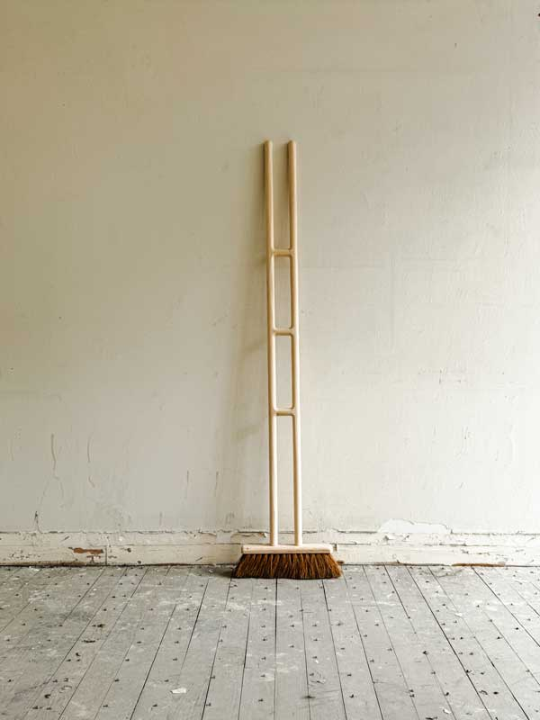
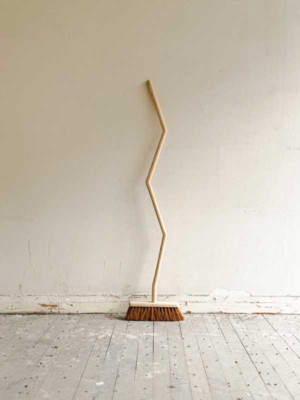
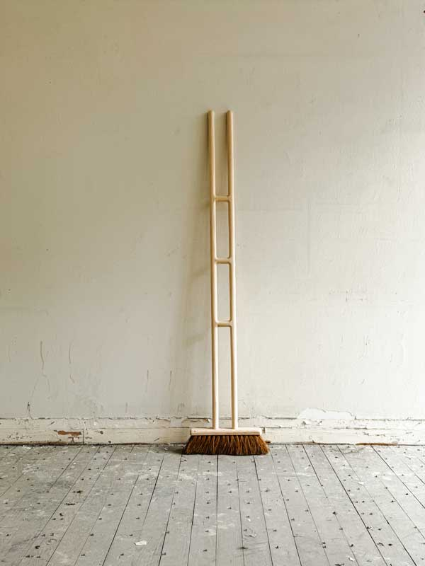
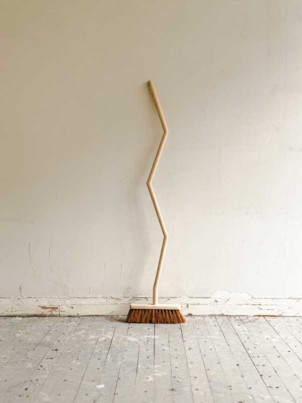

Futuribles offre un regard sur les multiples voies possibles après l’École Supérieure d’Art et Design de Saint-Étienne, reflétant la diversité des approches et les dynamiques de l’art et du design contemporain.
Le temps de quelques semaines, 30 designer·euse·s et artistes qui ne se sont parfois jamais croisé·e·s durant leurs années stéphanoises voient leur(s) pièce(s) cohabiter.
Pour celles et ceux dont les productions dépassent le cadre de l’exposition, par leur format, leur nature théorique ou leur contexte d’implantation, un podcast relatant leurs expériences est disponible sur ppdesigner.fr et par le biais des distributeurs présents sur la vitrine rose.
Futuribles est présentée par Presque Pas Designer, un collectif de 6 designer·euse·s composé·e·s de Thomas Dutoit, Emma Faury‑‑Graziani, Manon Freulon, Félix Fritz, Mathilde Garcia (Very Good Design) et Perrine Kamoun.
1.
Sans titre
Éric Jourdan
Matériaux : Bois peint
Dimensions : 350×350×700mm
Éric est né en 1961 à Chatou (78). Il est diplomé de l'École des Beaux-Arts de Saint-Étienne et de L'École Nationale Supérieure des Arts Décoratifs de Paris. Il débute une collaboration avec la galerie Neotu et aura en 1991 une exposition personnelle à la fondation Cartier. En 1995 il propose un travail autour du meuble traversant dans le cadre d'une Carte Blanche au VIA. La galerie Gilles Peyroulet et cie présente plusieurs collections de mobilier dessinées par Éric jourdan. Il réalise la signalétique de la cité universitaire internationale de Paris avec Ruedi Baur en 2002. Depuis 2002 il collabore aussi avec Ligne Roset, société avec laquelle il obtient un Red Dot Design Award pour le canapé Snowdonia. Plusieurs de ses modèles de sièges et de mobilier sont apparus depuis dans la collection Ligne Roset, le fauteuil Shaman étant le dernier en date. Cinna lui doit, entre autre, la collection Hyannis Port.
2.
Hommage au carré
Patrick de Glo de Besses
Matériaux : Chaise en contre plaqué d'okoumé et stratifié or, carnation
et gueule.
Dimensions : 480×470×825mm
Patrick de Glo de Besses est designer d’objet et d’espace, diplômé de l'École des
Beaux-Arts de Saint-Étienne et post diplômé des Arts Décoratifs de Paris. De ses débuts chez Andrée Putman,
Patrick de Glo de Besses garde le souvenir d'un contexte de création assez exceptionnel,
à la fois libre et bien encadré.
Aujourd'hui, en solo, il partage son temps entre le travail de commande pour les particuliers, les
entreprises et les institutions (scénographie d'expositions, aménagements intérieurs, création et production
de luminaires et mobiliers) et une recherche personnelle qui révèle une appétence pour les systèmes
constructifs relevant à la fois de la structure et du motif, un goût pour le décoratif, la mise en scène et
les fonctions ouvertes. Souhaitant donner une portée plus large à ses créations, il entame depuis peu
plusieurs collaborations avec des éditeurs.
Il enseigne à l'École Nationale Supérieure de Création Industrielle (ENSCI-Les Ateliers) et le mobilier à
l'École Nationale Supérieure d'Architecture Paris-Belleville.
Ses recherches autour de la structure et de l'ornement sont présentées à la Granville Gallery et à la
galerie ColletPark à Paris.
L'espace "les collections" est réservé aux collectionneurs qui pourront y découvrir des pièces plus
confidentielles ou en devenir. Chacun des modèles peut être adapté (matériaux, encombrements, ...) aux
besoins. Pour avoir accès à cet espace réservé, faites-en la demande par mail à :
contact@patrickdeglodebesses.com
Photographies © Grégory Copitet
3.
NÉVÉ
Atelier BL119
Matériaux : Bois massif laqué, marbre de Carrare
Dimensions : 1300×615×350mm
Blain-Dixneuf est un atelier de design fondé en 2007 par Grégory Blain et Hervé Dixneuf, tous deux diplômés
de l’ESAD de Saint-Étienne.
Leur collaboration s’inscrit dans une démarche expérimentale, nourrie par une curiosité partagée pour les
matériaux, les usages et les formes. Chaque projet naît d’un manque repéré, d’un désir d’exploration ou d’un
geste de réinterprétation. Leur travail se caractérise par une économie de moyens, une attention portée aux
détails et une volonté de créer des objets à la fois simples, fonctionnels et singuliers.
Le dialogue permanent entre les deux designers structure leur approche, mêlant confrontation d’idées et
exigence pragmatique.
Finalistes de la bourse Agora en 2007, ils remportent en 2008 le concours Cinna - Révélateur de talents avec
La niche (catégorie objets de décoration) et sont sélectionnés au festival Design Parade de la Villa
Noailles en 2009.
Aujourd’hui, ils poursuivent le développement de projets en collaboration avec des marques, entreprises et
éditeurs tels que Cinna-Ligne Roset, Muuto, Bernard Chauveau, Manganèse Editions, le CIAV de Meisenthal ou
encore la Cristallerie Saint-Louis.
4.
Sur le fil
Studio Rémi Bouhaniche
Matériaux : Pierre de Ruoms, câbles en acier,
tendeurs et butées en acier, plateau acier poli miroir
Dimensions : 368×368×500mm
Après avoir obtenu un BTS (Brevet de Technicien Supérieur) Design de Produits à Marseille, Rémi Bouhaniche s’oriente en 2004 vers les Beaux-Arts de Saint-Etienne où il développe une démarche personnelle basée sur le dessin, les formes et les matières. Entre 2007 et 2008, il part suivre un semestre d’étude à Srishti, Bangalore en Inde, voyage qui aura un impacte considérable sur son travail. Résolument tourné vers un design qui privilégie les sens et le geste, il crée en 2009 la lampe Étirement, lauréate en janvier de l’année suivante du D3 Contest au Salon IMM Cologne. Ayant pour ambition de proposer une vision sur le design qui reflète un véritable engagement, il fonde à la sortie de l’ESADSE sa propre agence. Il développe dès lors des collaborations diverses et variées avec des éditeurs, galeristes et instituts tels que la Granville Gallery, The Gallery à Bruxelles et l’Institut Paul Bocuse. Depuis, il continue de développer des collaborations dans les secteurs du meubles et de l’architecture d’intérieur avec des clients privés et des marques reconnues telles que Ligne Roset, CINNA, La Maison Convertible, Made with Spin, Eno Studio, Mi Hotel, Loco Design, Suffa et des marques naissantes comme Spalli, ORBE NOVO et Inteam, avec pour but de proposer des créations de grande qualité et durables.
La collection « Sentiers » est une mise en dialogue entre le design en tant que processus créatif, le paysage, les matériaux et leur mise en œuvre.Elle raconte au travers de quatre “tableaux” mêlant textes et objets, une ballade, à la fois vécue et imaginaire sur le territoire de La Combe de Savoie. Les sentiers sur lesquels se déroule cette promenade relient symboliquement les écoles de Francin en passant par Montmélian jusqu’à Apremont. La scénographie met ainsi directement en dialogue les travaux d’élèves avec cette narration.
5.
Galta Forte
Cluzel / Pluchon
Année : 2021
Matériaux : Chêne massif et placage bois.
Dimensions : 1450×600×360mm
Finition : Teinté vert
Fondé en 2015, le bureau Cluzel / Pluchon a été créé par Sébastien Cluzel et Morgane
Pluchon. Leur démarche consiste à créer des moments de vie autour des objets du quotidien en questionnant l’usage, leur
perception dans l’espace ainsi que leur mode de production. Pour cela, ils collaborent avec des éditeurs et
des entreprises en France et à l'étranger pour concevoir des produits fonctionnels, pérennes et élégants.
C’est une esthétique de l’économie et de l’usage qui dirige l’ensemble de leurs créations. La compréhension
des outils industriels et artisanaux mis à leur disposition est toujours la première étape du processus de
développement. Ils leur permettent de maîtriser l’ensemble des détails techniques et esthétiques des projets
dans le but de rendre leurs objets les plus honnêtes possible.
Ils voient le design comme un vrai dialogue entre fabricants et créateurs. Tout au long du processus
de développement, ils aiment échanger avec leurs partenaires artisans et industriels en sachant que ces temps
de partage sont précieux et enrichissent leurs projets. Cela leur permet de choisir les matières
les plus pertinentes au regard de la forme et de la fonction de leurs produits. Leurs recherches les
amènent à explorer toutes les multiples facettes des matières courantes comme le bois, l’aluminium, la
céramique ou encore le verre.
6.
FcNd_02
Jean-Baptiste Durand
Matériaux : Acier, tissu, PLA, composants électriques
Dimensions : 350×350×1200mm
Jean-Baptiste Durand est designer basé à Paris.
Il explore dans son travail personnel les dépendances entre architecture et scénographie, mobilier et objets
non-utilitaires.
Inspiré par divers langages techniques, recouvrant d’un savoir-faire ancestral ou technologique, il pratique
une sorte d'échantillonnage, composant avec les évocations de ces univers. Sa pratique cherche à échapper
aux étiquettes conventionnelles du designer ou de l’artiste, se laissant plutôt guider par l'inspiration du
moment, embrassant la liberté d’une
créativité au doigt mouillé.
Son amour pour cette diversité se manifeste dans sa volonté de ne pas se
confiner à un style particulier ou à une typologie d'objets, cherchant plutôt à explorer les possibilités
infinies de l'expression créative.
Après un début d’aventure solo, l’obtention de différents prix, notamment le Rado Star Prize, puis une pause
dans cette pratique, il réapparaît à l’occasion de la Design Week 2023, emprunt d’une sérénité
paradoxalement alimentée par une volonté de rester naïf et innocent.
7.
The cyborg chair 02
Anaïs Borie
Matériaux : Aluminium, Led stripe
Dimensions : 1100×720×900mm
Anaïs Borie est une designer française basée entre la France et les Pays-Bas.
Elle explore la convergence
mythique de l’artisanat et de la technologie.
Son travail mélange la technologie, les sons de performance et design. Dans sa pratique, elle élabore des
récits alternatifs, insufflant la vie à des êtres hybrides offrant des aperçus d’avenirs potentiels.
Dans sa pratique du design, elle fait souvent appel au récit fictionel comme outil méthodologique. Cette
approche lui permet d’aborder la discipline de manière aventureuse : l’expérience du récit spéculatif
à travers des objets suscite le dialogue, encourage des réflexions sur les transformations contemporaines.
Elle conçoit ses objets comme des transfigurations quotidiennes, ils ouvrent la voie à des mondes
fantasmagoriques et se proposent comme alternatives aux réalités dominantes. À travers eux, elle aime dessiner
l’anticipation formelle et esthétique d’un monde hybride, augmenté par la technologie et en harmonie avec le
vivant.
8.
Balai
Thibaut Lipski
Matériaux : Pin et fibre de coco
Dimensions : 1400×300×70mm
.jpg) 



Thibaut Lipski est un designer dont le travail s’articule autour du détournement d'objets du quotidien, il
transforme des éléments familiers en pièces uniques et surprenantes.
L’objectif est de changer la perception que nous avons de notre quotidien en révélant la beauté et le
potentiel inattendus des objets qui nous entourent.
Photos © Thibaut Lipski
9.
Lampe Prisma M
Studio Quiproquo
Matériaux :
Dimensions : 420×188×100mm
Quiproquo est un studio formé en 2021 par Marie Vernier-Lopin et Bastien Phung, designers et artisans. Ils travaillent de concert au développement d’un univers formel, entrepris dans la rencontre de leurs domaines respectifs. La démarche du studio est globale, ancrée dans un territoire, considérant l’environnement et ses acteurs comme point de départ de tout projet. Le duo s’intéresse aux savoir-faire, afin de comprendre les possibles qu’offrent les ateliers comme médium de création. Il nous invite à reconsidérer nos besoins et à fortiori le choix de ce qui nous entoure. Il propose des objets narratifs qui interpellent, autant par leur forme que par leur usage. Marie Vernier-Lopin développe pendant son parcours un design narratif et singulier où elle explore les liens entre mémoire, design et artisanat. Elle exerce en parallèle sa pratique de céramiste et de designer matériaux. Bastien Phung est designer, ébéniste et maroquinier. Il est installé en région parisienne où il conçoit et fabrique en toute autonomie des commandes pour des musées ou pour des artistes comme Anselm Kiefer, Camille Henrot ou Yona Friedman. Il enseigne également à l’école de Condé Paris et intervient à Olivier de Serres.
« C’est en récupérant une dizaine d’écrans LCD obsolètes, que nous nous sommes interrogés sur la place de ces “nouveaux déchets” qui ne répondent plus à leur fonction première. Obsolètes de par leur programmation et dont l’accès aux pièces de rechange n’est pas permis. Obsolètes car la réparation n’est pas économiquement viable. Que faire de ce matériel électronique désormais encombrant ? À qui le confier pour le réparer, le revaloriser ou le recycler ? Et comment les entreprises de ces filières procèdent-elles ? Nos écrans ont pour la plupart des problèmes irréversibles liés à la dalle LCD. Le verre cassé, des défauts dans les couches de cristaux liquides ou les circuits intégrés dont les composants ne sont pas accessibles. Les recycleries et les déchèteries nous donnent le même diagnostic. Nos écrans sont voués au centre de tri où ils seront démontés. Si certains éléments seront recyclés, comme les équipements électroniques qui contiennent des métaux précieux ou une partie des plastiques, le reste sera enfoui, incinéré ou exporté vers des pays en développement pour un traitement dans des conditions souvent dangereuses pour la santé et l’environnement. Nous démontons les écrans, recyclons ce qui peut l’être et revalorisons une partie vouée à la destruction. Première étape de recherche de revalorisation : les feuilles de prisme optique. Ces films contrôlent la manière dont la lumière intéragit avec les cristaux liquides pour produire l’image affichée. Les écrans sont composés de films optiques que nous utilisons pour leurs propriétés intrinsèques et que nous revalorisons en créant trois objets. »
10.
(…) vue du ciel.
Audrey Perzo
Matériaux : Verre dépolie à l'acide, peinture acrylique, mousse RAKU TOOL
Dimensions : ⌀1500×8mm
Audrey Perzo est plasticienne : elle recompose un lieu en y greffant ses œuvres d’art, en peignant à même les murs, en se le réappropriant. Elle travaillait avec le tissu, pour sa malléabilité et sa légèreté, elle s’intéresse maintenant au verre, pour sa transparence et sa fragilité.
11.
Hublot,
édition Roche Bobois
Thomas Larbain
Matériaux : Chêne massif teinté alazan, extérieur
placage moulé chêne teinté alezan, intérieur
placage structuré en Louro Faïa blanchi.
Dimensions : 680×290×190mm
Thomas est diplômé de l’École supérieure d’art et design de Saint-Étienne en 2018. Designer à Paris chez Constance Guisset, il développe son propre studio où il travaille avec des éditeurs comme Roche Bobois ou Ligne Roset mais également des institutions culturelle comme le CNAP, la Fondation d’entreprise Hermès, l’Institut français de Milan, la Triennale de Milan ou le Millénaire de Caen. Son travail a été exposé en France au Palais de Tokyo, à Villa Noailles lors de la Design Parade, au VIA, à la Biennale du design de Saint-Etienne et à l’international lors de la Design week de Milan. En juin 2025, il inaugura des horloges des marées qui seront installées de manière permanente dans la ville de Caen.
Hublot est une lampe à poser entièrement en bois. Son abat-jour reprend la forme ovale des lucarnes des bateaux. La lumière apparaît en son centre et évoque le soleil se levant ou se couchant à l’horizon sur la mer. La lampe devient, ainsi, une fenêtre sur un monde imaginaire qui invite au voyage.
12.
Résonances
industrielles
Grégory Granados
Titre : T10 // T20 // T25
Matériaux : Rebuts industriels d'entreprises du bassin thiermois : Bois,
acier inoxydable, PLA, matériaux composites
Dimensions : T10 // 105×105×91mm
T20 // 75×75×90mm
T25 // 60×60×170mm
En 2024, Grégory Granados a entrepris une collecte de pièces détachées industrielles récupérées auprès d’industries implantées dans les bassins thiernois et stéphanois. Chargés d’histoire, ces fragments issus d’entreprises locales incarnent à ses yeux la mémoire passée et présente des savoir-faire et des personnes qui les façonnent. Détournés de leur vocation d’origine, ils deviennent des objets témoins, des archives structurées et sculpturales qui transposent le geste industriel et le cristallisent. Résidence réalisée en partenariat avec la Ville de Saint-Étienne, le centre d'art contemporain d'intérêt national le Creux de l'enfer ainsi que la DRAC Auvergne-Rhône-Alpes sur le territoire du Parc Naturel Régional du Livradois-Forez. Projet en co-création avec les entreprises Fontenille Pataud, Muzard, Perceval, Wichard, Roddier Roddier.
Designer, il vit et travaille à Saint-Étienne. Après des études en ébénisterie, lutherie et menuiserie, il obtient son DNSEP à l’École Supérieure d’Art et Design de Saint-Étienne en 2018 où il enseigne le design d’objet depuis 2021 en parallèle de sa pratique. Aujourd’hui, sa méthode de travail repose sur trois actions : récolter, fractionner, assembler. Cette approche permet de défendre une vision "opportuniste" d’un design collecteur/récupérateur qui propose de reconsidérer les objets qui nous entourent pour inventer de nouveaux usages à partir d'éléments déjà disponibles.
13.
Vitesse, Sample
Julia Debord-Dany
Matériaux : Mousse de polyuréthane, silicone, fibre de flocage textuke jaune
fluo, talc
Dimensions : 180×270×300mm
Julia Debord-Dany est designer et artiste visuelle basée à Saint-Étienne. Diplômée de l’ESADSE en 2019, elle développe une pratique située et expérimentale, à la croisée du design, de l’art et de l’artisanat. Elle interroge les traces laissées par notre civilisation et révèle, par la recherche et l’expérimentation, leur potentiel poétique à travers la sculpture et l’objet.
Julia Debord-Dany est actuellement en résidence à la Villa Albertine à New York avec WantedDesign, avec le soutien de la Fondation Bettencourt Schueller. Elle présentera ses créations le 15 mai lors de l’exposition collective «Synesthésie», organisée à la Villa Albertine dans le cadre de Oui Design.
14.
Z2
Dorian Felgines
Matériaux : PLA
Dimensions : 400×400×430mm
Z2 est un tabouret réalisé en impression 3D FDM. Sa forme lui est conférée par une courbe modifiée sur le plan Z. Elle lui permet d’être empilable, et les nervures le rendent plus résistant. Sur le plan environnemental, ce tabouret est fabriqué en bioplastique, PLA. L’idée derrière ce tabouret porte sur une réflexion des nouveaux moyens de production. À la manière de Sol Lewitt et ses “Wall Drawings”, vendre les instructions de fabrication (fichier 3D), l’acquéreur possède directement son moyen de production ou le fait produire par un Fab-Lab, ce qui permet de réduire les coûts et les impacts environnementaux des transports.
Diplômé de l’École Supérieure d’Art et Design de Saint-Étienne, Dorian Felgines (né en 1993) se décrit comme un designer- tuner. C’est de son intérêt porté aux sports mécaniques, et plus précisément au tuning, qu’il a orienté sa pratique du design. Le tuning est l’acte de personnaliser un véhicule afin d’en augmenter sa performance et son esthétisme. Mal connu et astreint au mauvais goût, voire au kitsch, il est pourtant un procédé d’appropriation d’un objet industriel normalisé qui questionne la fabrication du design industriel. Dorian Felgines transpose cette méthodologie à son design, abordant l’objet comme un élément mécanique augmenté. Cette approche singulière lui permet de créer de nouvelles narrations formelles.
15.
LPM
Gold-Dalg Atelier
Titres : Espèce 4.11 // Espèce 4.8 // Espèce
4.9
Matériaux : Verre borosilicate
Dimensions : Espèce
4.11 // 140×70×130mm
Espèce 4.8 // 140×50×120mm
Espèce 4.9 // 150×40×70mm
Ces créations au profil zoomorphique mettent en avant l’une des capacités du règne végétal : la "résistance passive". En effet, chaque partie est importante sans qu’aucune ne soit indispensable. Lorsque le végétal, séparé de sa structure principale, entame sa phase de croissance, un nouveau milieu prend vie. Ce développement à part entière transforme l’objet décoratif en un véritable écosystème. Observer ce phénomène au travers de l’objet pose un regard contemplatif sur la croissance végétale et souligne sa temporalité, si différente de celle humaine. Designer d’objet formée à l’ENSAAMA puis à l’ESAD de Saint-Étienne, Éléonore Gold-Dalg poursuit son parcours avec l’obtention d’un CAP en soufflage de verre au chalumeau mention verrerie scientifique. Elle porte un intérêt pour l’univers végétal et sa domestication. Des notions comme les conditions de vie du végétal ou le statut des objets sont le fil conducteur de ses productions. Elle propose aujourd’hui des créations utilitaires ou contemplatives et collabore avec différents corps de métiers pour la réalisation d’objets uniques ou en petites séries.
16.
Côte de bœuf
Clémentine Post
Matériaux : Huile sur toile
Dimensions : 800×1100mm
Un tableau devenu attentif - sollicite et invite - on s’y retrouve un peu comme à la table d’une fête à laquelle on n’a pas été convié, on regarde un peu partout, quelque chose bourdonne alors, se détache de l’objet observé, privilégie l’atmosphère, le plaisir de la vie de tout de suite. Certaines peintures de Clémentine, une amie et collègue d’atelier, font un peu cet effet, un genre de répertoire du tout venant, sans superflu, aussi simple qu’une fin d’après-midi ou que la phrase qui suit: On aime tellement être de bonne humeur. Benjamin Collet
Clémentine Post est née en 1996 à Angers. Elle vit et travaille à Paris. Diplomée de l’ESAD de Saint-Étienne en 2019, elle est résidente aux Ateliers Wonder depuis 2020. Elle peint à l’huile et dessine au feutre des scènes du quotidien et des natures mortes.
17.
Assemblage
typographique - U
Atelier Ilané
Matériaux : Toile polyesthère, mélange laine/acrylique, toile de coton et ruban
sergé en coton.
Dimensions : 1100×800mm
Dans ses œuvres touffetées, Léa Belzunces (atelier ilané) explore les potentialités du fil comme matière sculpturale. En s’appropriant le vocabulaire épuré de la typographie sans serif, elle abstrait la lettre pour en dissoudre le sens, ne conservant que le dialogue entre formes et contreformes, pleins et vides. Ses compositions géométriques, à la fois tactiles et visuelles, invitent à une lecture sensible où le geste textile devient langage.
Léa Belzunces expose actuellement à la Biennale Internationale Design Saint-Étienne, où elle présente ses dernières recherches textiles. En juin, elle ouvre son nouvel atelier-boutique au 35 rue de la République, un lieu dédié à la création et à la rencontre. Formatrice à l’ESADSE, elle partage aussi son savoir-faire autour du graphisme.
18.
SANTONS
DESIGNER.EUSE.S
INFILTRÉ.E.S
Atelier Zerma
Titres : Distillateur.ice, Apiculteur.ice, Serge, Poissonnier.ère, Aïoli,
Berger.ère.
Matériaux : Argile rouge cuite, gouache
Dimensions : 120×25mm
« Ma pratique témoigne du parcours d’une designeuse à peine diplômée, confrontée à la réalité du marché du travail ainsi qu'aux problématiques environnementales, économiques et sociales liées au design. Bien loin de ce que mes années d’études m’avaient laissé entrevoir, je dois aujourd'hui gagner ma vie sans pour autant abandonner ce qui m’anime. La formation que j’ai reçue a modelé ma façon de penser et de voir le monde. J’estime donc que grâce à une certaine «déformation professionnelle», peu importe l’activité que je mène, mon regard reste celui d’une designeuse. Ma pratique du design se retrouve donc au travers d’ une succession d’emplois alimentaires, dans lesquels je poursuis mes activités de designeuse/ chercheuse/praticienne. »
19.
Radiance
Victor Cadoret
Matériaux : Peinture acrylique sur toile
Dimensions : 1160×890mm
Victor Cadoret développe une recherche picturale abstraite qui questionne les rapports du virtuel au réel et interroge la véracité des images contemporaines. Il aime s’amuser à brouiller les pistes comme un illusionniste qui se joue des pertes d’informations et nous invite à contempler l’invisible et l’essentiel. C’est pour lui une façon de pointer du doigt et de montrer ce que l’on ne voit plus, agissant comme une sorte de temps de pause, un zoom sur la matière à caractère méditatif, encré dans une époque de la vitesse et de la productivité.
20.
Still Life Vases
Arthur Benyaya Cazorla
Année : 2024-2025
Matériaux : Huile sur contreplaqué, verre et caoutchouc
Dimensions : variables
Arthur Benyaya Cazorla est artiste, designer et chercheur associé à l’unité de recherche Spacetelling de l’ESADSE. Sa pratique, à la frontière entre design et art contemporain, interroge cette limite poreuse. Son travail explore les paradoxes et potentiels narratifs du design au travers d’objets doucement dissonants. Plus qu’un outil solutionniste, il envisage le design comme un espace de questionnement d’où émergent des formes critiques et poétiques. L’usage devient alors prétexte à réflexion.
Alberto, Amédée, Patrick II, Fernand, Patrick Ie, Bernard, et Nadia sont six vases issus de natures mortes. Reproduits à l’huile sur contreplaqué puis associés à un contenant via un système de sangles, ces représentations transcendent leurs espaces picturaux pour devenir des objets fonctionnels.
Porcelaines de Chine (1988) Bernard Buffet Fig Branch (1972) Patrick Caulfield Red and white still life (1966) Patrick Caulfield Nature morte au compotier (1949) Nadia Khodossievitch-Léger Un vase bleu, un tapis rouge (1952) Fernand Léger Nature morte à la pomme (1914) Alberto Magnelli Trois vases (1925) Amédée Ozenfant
21.
Tempête 1/7
Claire Vauquois
Année : 2024-2025
Matériaux : Chrysanthèmes bleus
Dimensions : 210×310mm
Claire Vauquois est une designer et artiste française basée à Paris. Après des études de couture, elle s'oriente vers les beaux-arts en spécialité objet. Elle est diplômée de la Haute École des Arts du Rhin et de l'École Supérieure d'Art et Design de Saint-Étienne. Elle explore et se questionne sur la valorisation de nos déchets. Sa pratique s'articule autour de l'ennoblissement de matières modestes, délaissées, jetés, considérant que la notion de déchet n'existe pas.
Après une réflexion autour de la valeur de la poussière, de la trace et de l'usure, elle crée son projet Orphose qui s’intéresse aux gestes, coutumes et traditions dont les fleurs viennent accompagner des moments de partage et son relayé au stade de langue symbolique forte. Elle développe un savoir-faire en réinterprétant les pétales de fleurs fanées comme un médium imparfait et riche. Elle exploite leur qualité esthétique naturelle pour proposer une nouvelle manière d’offrir, de conserver et de contempler les fleurs.
22.
Contenants
à liqueur solaire
Madé Mathieu
Année : 2024-2025
Matériaux : Grés, émail de granite, sables
Dimensions : ensemble = 600mm
23.
Sebka
Perrine Kamoun
Année : 2025
Matériaux : Grès blanc
Dimensions : 150×1100mm
24.
Column Unity Mono 02
Very Good Design
Année : 2025
Matériaux : Bois de pin laqué
Dimensions : 1500×400x900mm
« Depuis 2023, l’ensemble de mes productions est réuni sous le nom Very Good Design, une marque de mobilier domestique autoproduit et auto-édité. Pensée comme une satire des grandes enseignes aux pratiques discutables, elle inscrit les objets et mon discours théorique dans le contexte économique du design contemporain et de la diffusion auprès des particuliers. Les objets portent en eux mes questionnements et engagements quant à la responsabilité économique, sociale, environnementale et politique qui incombe aux designers lorsqu’ils produisent et diffusent des objets. »
25.
WSI_002
Emma Faury--Graziani
Année : 2025
Matériaux : Chêne, jesmonite et sciure de bois
Dimensions : 1500×600x1600mm
Emma Faury--Graziani est née en 1996 à Montpellier. Elle est Diplômée de l’École Supérieure d’Art et Design de Saint-Étienne en 2022. L’année suivante, Emma réalise une sculpture- totem pour Axalta, manifeste de leur savoir-faire industriel. Elle collabore avec Hors Studio en tant qu’assistante en recherches, créations et productions d’objets.
Depuis 2024, elle poursuit sa carrière en tant que designer et chercheuse indépendante, développant des projets innovants autour des biomatériaux.
26.
EQUUS | CERVUS
Félix Fritz
Année : 2025
Matériaux : laine acrylique
Dimensions : 1540×660mm
Stésichore, 570 av. J-C
« Un Cheval possédait seul un pré. Ayant vu un Cerf y entrer et y l’aire, des débats, il voulut se venger et alla trouver l’homme ; il lui demanda s’il pourrait, avec son secours, punir le Cerf. « Oui, répliqua l’homme, si tu me laisses te mettre un frein et monter sur ton dos. » Le Cheval y consentit; mais, au lieu de tirer vengeance du Cerf, il devint l’esclave de l’homme. »
De même, dit Stésichore, prenez garde qu’en voulant, vous aussi, tirer vengeance de vos ennemis, vous n’éprouviez le sort du Cheval : vous avez, déjà reçu le frein, puisque vous avez choisi un général avec un pouvoir absolu ; si vous donnez une garde à Phalaris et que vous le laissiez monter sur votre dos, vous deviendrez ses sujets. »
Jean de La Fontaine, 1668
De tout temps les Chevaux ne sont nés pour les hommes.
Lorsque le genre humain de gland se contentait,
Âne, Cheval, et Mule, aux forêts habitait ;
Et l’on ne voyait point, comme au siècle où nous sommes,
Tant de selles et tant de bâts,
Tant de harnois pour les combats,
Tant de chaises, tant de carrosses,
Comme aussi ne voyait-on pas
Tant de festins et tant de noces.
Or un Cheval eut alors différent
Avec un Cerf plein de vitesse,
Et ne pouvant l’attraper en courant,
Il eut recours à l’Homme, implora son adresse.
L’Homme lui mit un frein, lui sauta sur le dos,
Ne lui donna point de repos
Que le Cerf ne fût pris, et n’y laissât la vie ;
Et cela fait, le Cheval remercie
L’Homme son bienfaiteur, disant : Je suis à vous ;
Adieu. Je m’en retourne en mon séjour sauvage.
– Non pas cela, dit l’Homme ; il fait meilleur chez nous :
Je vois trop quel est votre usage.
Demeurez donc ; vous serez bien traité.
Et jusqu’au ventre en la litière.
Hélas ! que sert la bonne chère
Quand on n’a pas la liberté ?
Le Cheval s’aperçut qu’il avait fait folie ;
Mais il n’était plus temps : déjà son écurie
Était prête et toute bâtie.
Il y mourut en traînant son lien.
Sage s’il eût remis une légère offense.
Quel que soit le plaisir que cause la vengeance,
C’est l’acheter trop cher, que l’acheter d’un bien
Sans qui les autres ne sont rien.
27.
Nice Day & Stylo Bleu
Jovien Panné
Titre : Nice Day — SOFT CLICK
Matériaux : Boîtes en plastique modifiées avec éléments en corian usiné numériquement et composants
© Playmobils
Dimensions : 180×160×25mm
Titre : Stylo Bleu
Matériaux : Assemblage de stylos / Raccord en corian usiné au tour conventionnel.
Dimensions : 190×38×25mm
Jovien Panné est artiste/designer. Après un parcours chaotique au collège, il s’évade du circuit scolaire « standard » pour faire un CAP et brevet des métiers d'art en ébénisterie au Lycée Professionnel des métiers d'art Georges Guynemer (Uzès). Il complète son cursus à l’Esadse avec une licence de design et un master en art et design contemporain Espaces. Pendant ses études, il opère en tant qu’artisan versatile indépendant pour différents artistes et designer·euses. Le voilà à présent dans la « vraie vie », jonglant entre travail alimentaire et pratique personnelle, s’interrogeant au quotidien sur l’anthropologie de l’industrie et le rapport artisanat/industrie/manufacture.
28.
Heure soleil
Simon Henry & Perrine Kamoun
Année : 2025
Matériaux : Faïence émaillé, étain
Dimensions : 250×200mm

29.
Suspension
Louis Chevalier
Année : 2025
30.
Lampe de compagnie
Mathias Padlewski
Année : 2025
Matériaux : Mdf, sapin, chêne, argile et papier
Dimensions : 270×210×210mm